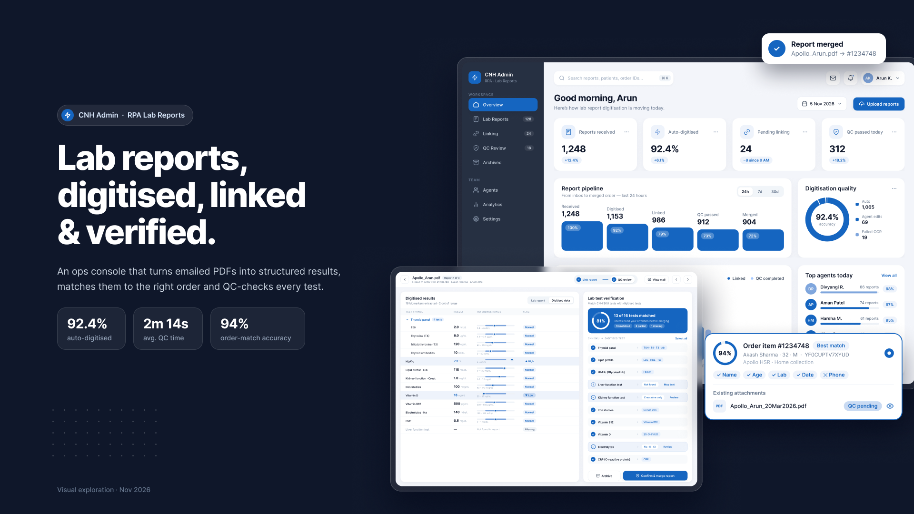
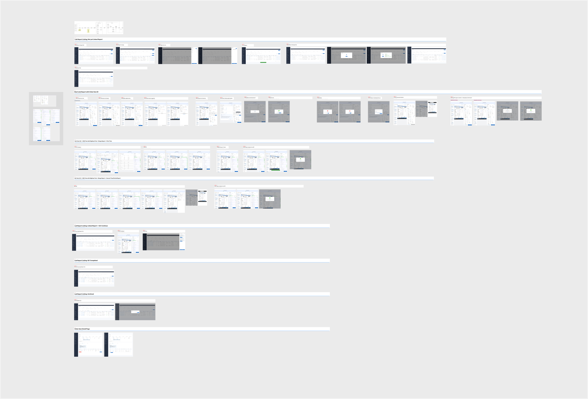
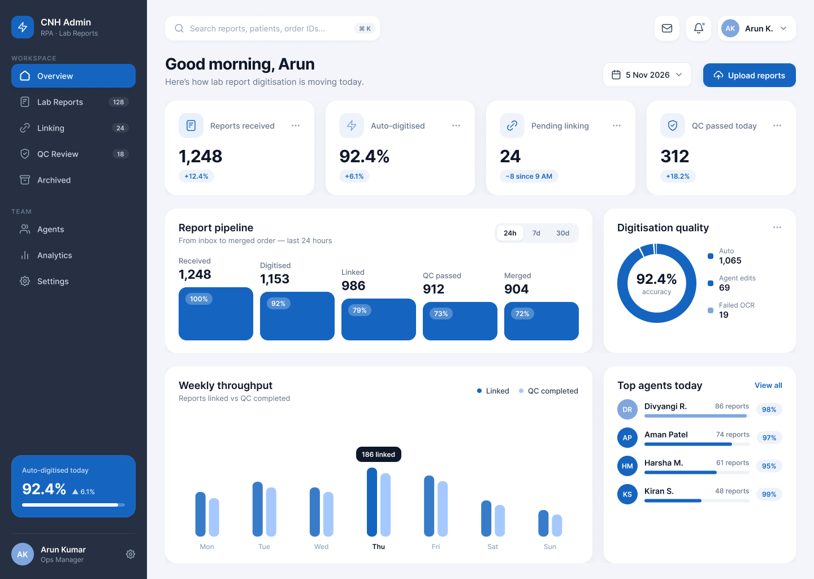
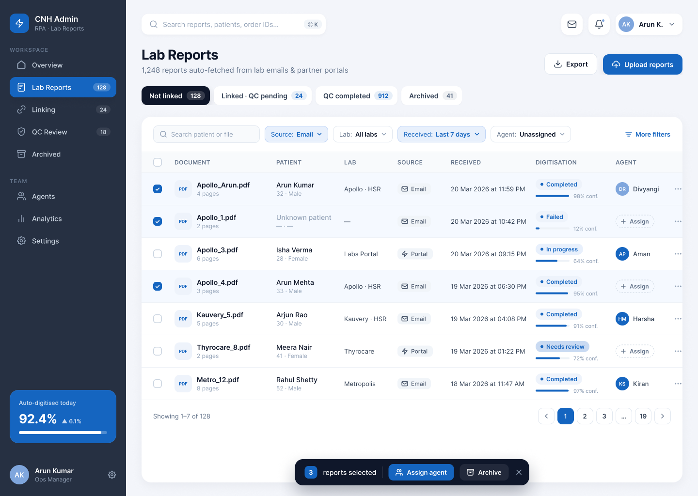
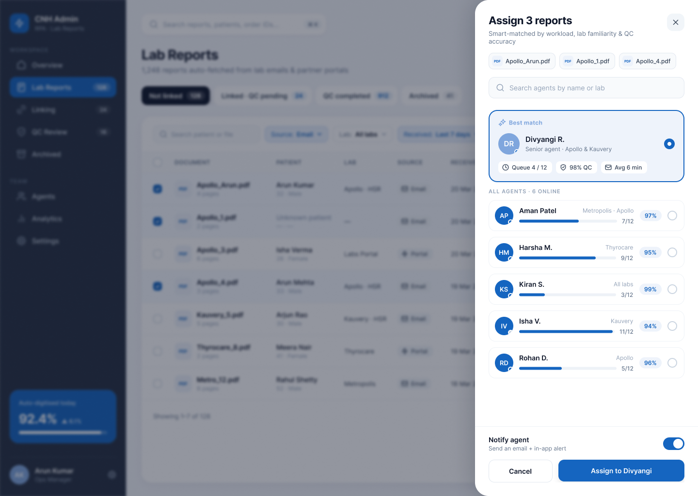
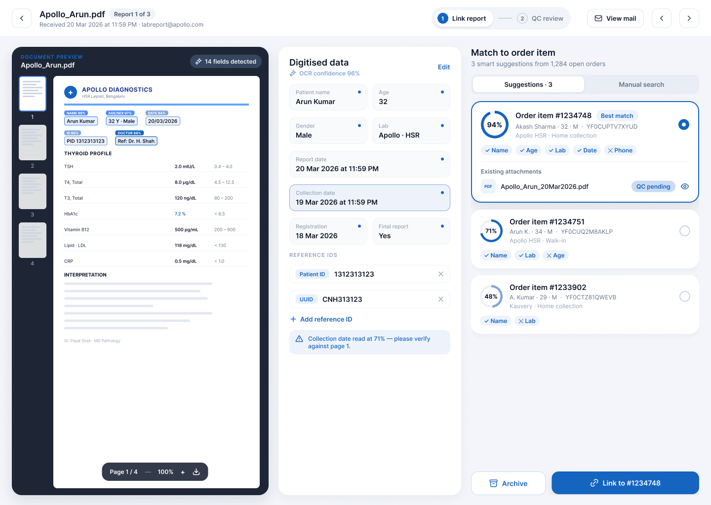
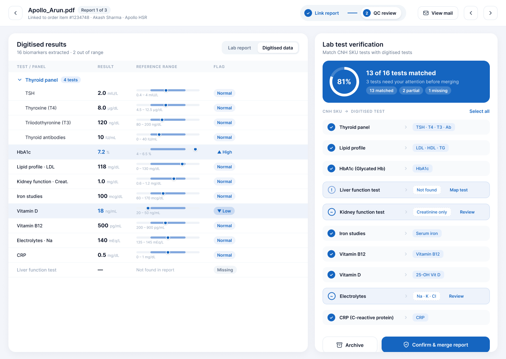
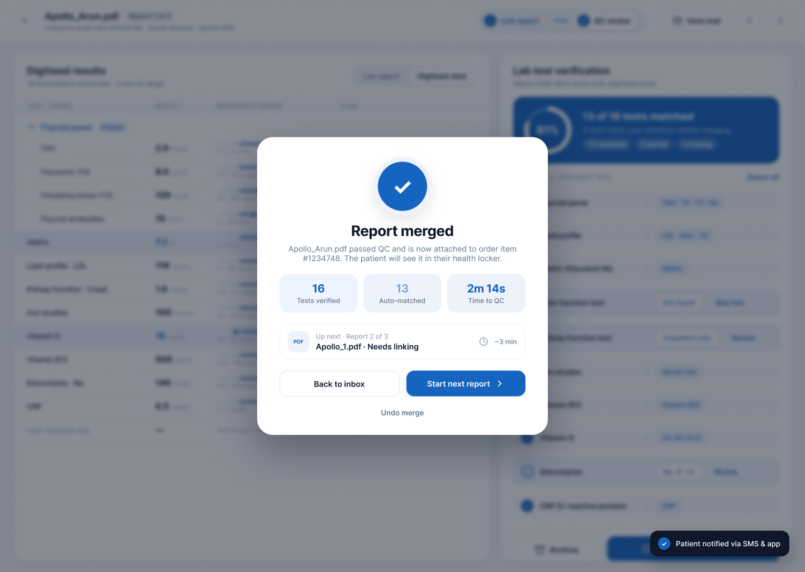
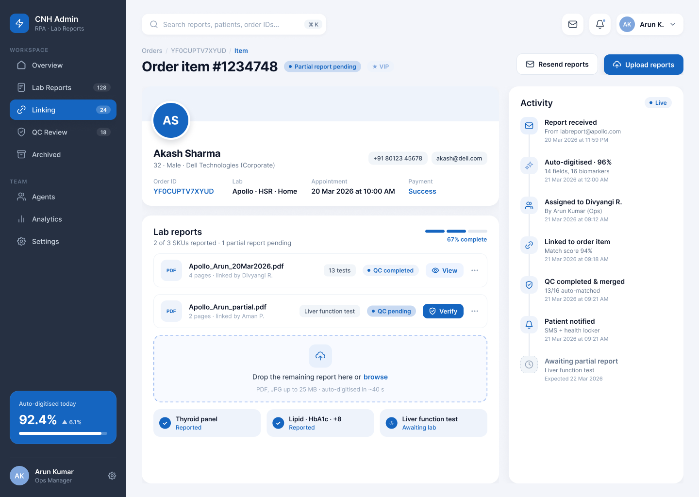

Change the unit of work
Reframe a QC record around the order item and its pooled reports rather than each document.
An operations platform that automatically links lab reports to order items, pools related documents and turns quality control into a traceable exception-led workflow.
Lead product designer - workflow, interaction and service logic
Lab operations agents, team leads and administrators
Automate confident matches while keeping ambiguous and high-risk decisions controllable
Targets set with the product team. Live results will be added after rollout.

Lab Report Pooling - RPA Enhancements
Product strategy, workflow design, interaction design, prototyping and cross-functional alignment
2026 - Enhancement phase
Desktop operations platform
Confidential
The existing automation tool treated every uploaded lab report as a separate QC task. When an order contained multiple reports, operations agents had to link, review and reconcile them manually. The workflow increased queue volume, repeated work and made ownership difficult to understand.
The opportunity was to move QC from the document level to the order-item level: automatically link high-confidence reports, pool related documents, preserve human control for exceptions and create one auditable path from ingestion to approval.
I led the experience architecture across the QC list, unlinked-document queue, order-item detail and approval flow. My role was not to design automation as a black box; it was to establish where the system could act safely, where an agent must intervene and how every automated or manual decision remained visible and reversible.
Reframe a QC record around the order item and its pooled reports rather than each document.
Use assignment, locking, supervisor override and conflict messaging to prevent concurrent work.
Show source, match confidence, linked documents and immutable activity history.
Automation handles confident, repeatable work. Agents focus on low-confidence matches, exceptions and final verification. This reduces manual tagging without removing accountability.
The Figma flow covers report listing and filtering, auto-linked and manual states, assignment and unassignment, order-item QC, document linking, conflict notifications, unlink confirmation, archived and completed records, and order-detail redirection.

An agent must own an order-item QC record before reviewing or submitting it. Opening Verify assigns the record automatically; leaving without completing QC releases it. Other agents are blocked while work is in progress, while team leads and administrators retain override and unassignment controls.
If ownership changes during a session, submission is blocked and the agent receives a recovery message. This turns assignment from an administrative label into concurrency control.
QC is performed against the cumulative tests required by the order item, even when those tests arrive across multiple reports. The interface shows how many documents are attached, their source and match percentage, while retaining an Unlink action for each source document.
Unlinking requires confirmation, returns the document to the unlinked queue and recalculates digitisation and test mapping. Agents can correct automation without rebuilding the entire order.
Reports attached before assignment belong to the current QC record. Reports arriving after assignment create a separate record, preventing the task from changing underneath the agent. After the first QC completes, the same agent may continue into the next record or close the flow.
After QC approval, Smart Merge creates one final PDF, attaches it to the order item and removes the individual source documents. The activity log records auto-linking, manual linking, assignment, unlinking, QC approval and merge events with actors and timestamps.
The design also communicates an irreversible constraint: an auto-merged document cannot be demerged. That makes accurate linking and exception handling before approval essential.
Block entry or explain which post-assignment documents can continue as a separate QC record.
Block submission and require reassignment before work can continue.
Confirm unlink, return it to the queue and recalculate dependent data.
Warn the second agent instead of allowing duplicate approval.
Create a separate record and preserve the original QC scope.
Keep the document unlinked and route it to human review.
These are target outcomes for the enhancement, not claimed post-launch results.
The system also records auto versus manual links, merged-document lineage, QC count by agent, unlink events, test-name matching accuracy and agent-level productivity.
I redesigned the core agent workflow as a showcase set on the Mira Pro admin system: neutral surfaces, one blue accent and evidence placed next to every decision — OCR confidence beside extracted fields, match scores beside suggested orders, and SKU coverage beside merge.







Confidence, match score and SKU coverage sit next to the action they justify.
One accent plus labels and marks — no red/amber/green dashboard.
After merge, the next report is one click away.
Pooling improves throughput, but manual test verification becomes cumulative: the system cannot always identify which source document produced a manually verified test. I would validate this trade-off with operations and compliance teams, monitor correction patterns, and test whether document-level provenance needs to remain accessible after merge.
Usability validation should focus on assignment comprehension, conflict recovery, confidence interpretation, multi-document completeness, unlink consequences and the agent's ability to reconstruct what the system changed.
The enhancement defines an order-item-level QC model, automated linking rules, pooled-document handling and auditable exception recovery. The PRD provides target metrics; post-launch results were not included.
Auto-link precision, manual correction rate, QC throughput per agent, time to complete pooled orders, assignment conflicts, duplicate approvals and source-document traceability after merge.
I’m always happy to talk about design leadership, healthcare products and design systems.